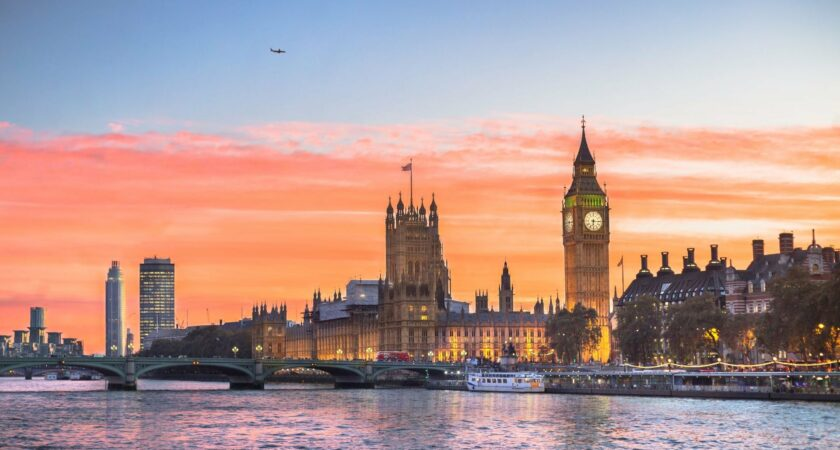
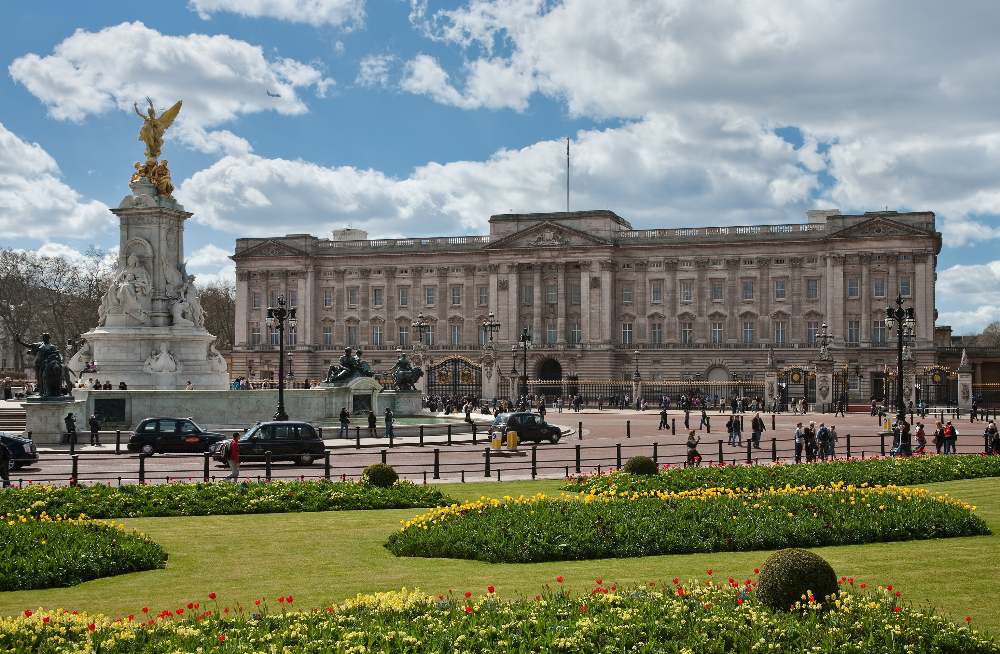
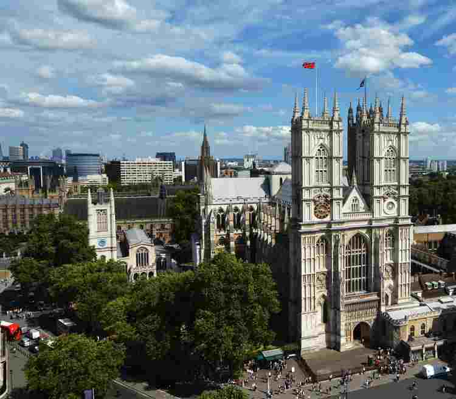
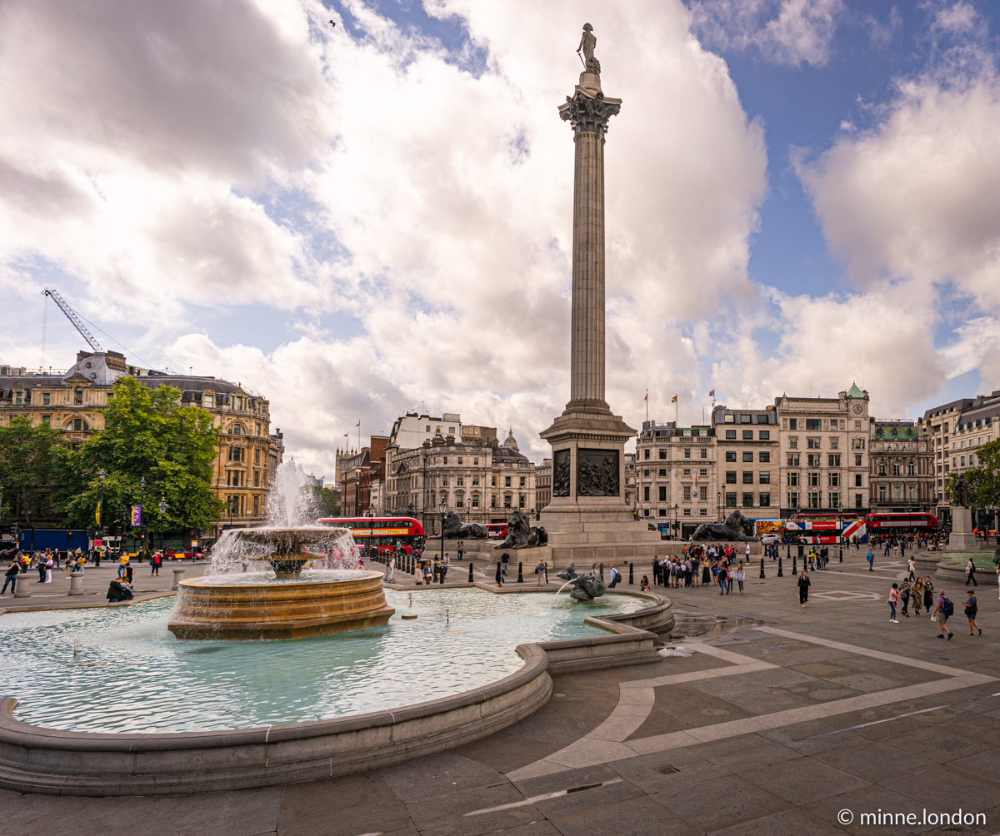

Londyn – stolica i największe miasto Anglii i Wielkiej Brytanii, położone w południowo-wschodniej części kraju, nad Tamizą. Jest trzecim co do wielkości miastem Europy, po Moskwie i Stambule, a jednocześnie jednym z większych miast świata zarówno w skali samego miasta, jak i całej aglomeracji.


Oficjalna londyńska rezydencja brytyjskich monarchów, zlokalizowana w City of Westminster. Największy na świecie pałac królewski, który od 1837 roku pełni funkcję oficjalnej siedziby monarszej. Jedna z pereł architektury późnego baroku.

Opactwo Westminsterskie – najważniejsza, obok katedry w Canterbury i katedry św. Pawła w londyńskim City, świątynia anglikańska. Opactwo, począwszy od Wilhelma Zdobywcy, jest miejscem koronacji królów Anglii i królów Wielkiej Brytanii, z wyjątkiem Edwarda V i Edwarda VIII, którzy nie byli koronowani.

Trafalgar Square – plac w Londynie, w City of Westminster, wytyczony w 1826 według projektu Johna Nasha w miejscu dawnych stajni królewskich. Nazwa placu upamiętnia zwycięstwo Royal Navy w morskiej bitwie pod Trafalgarem.